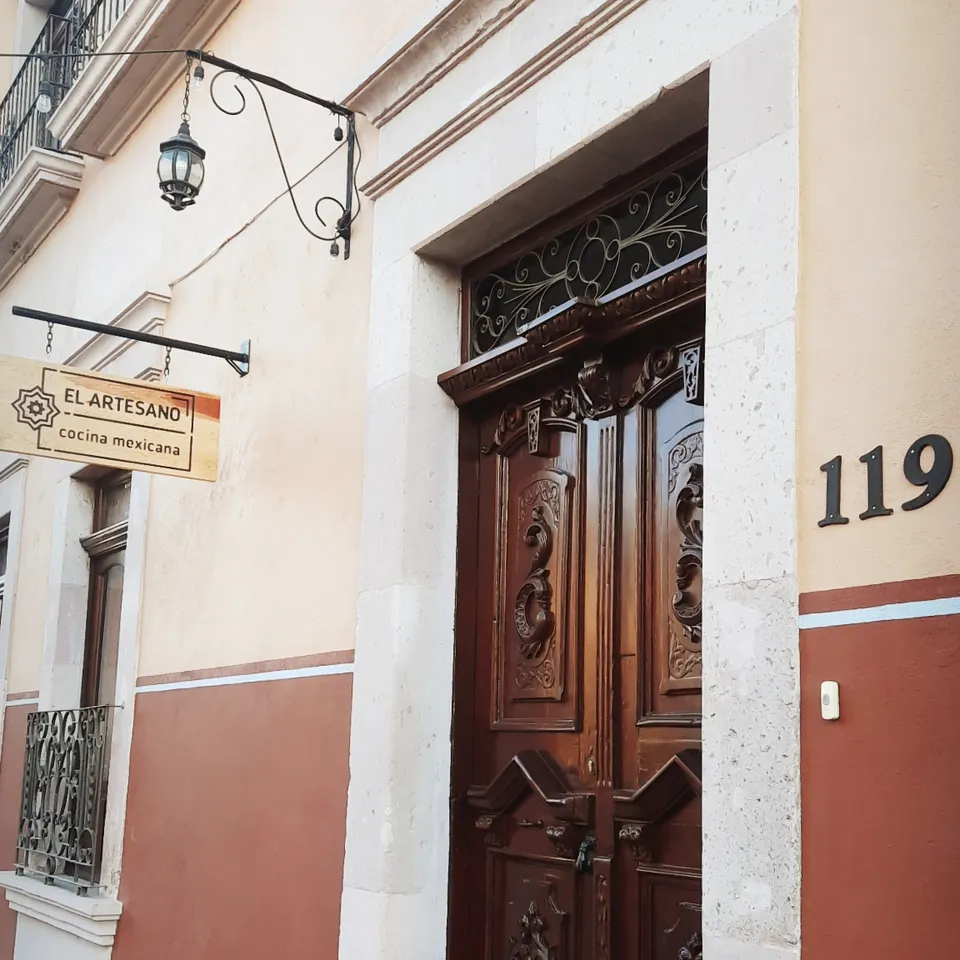
Francisco Primo Verdad 119
El pan lo hacemosaquí mismo.
Cocina mexicana en el centro de Aguascalientes. Desayunos y comida; los martes descansamos.
Los azulejos de la mesa
Voltea uno.Arma tu mesa.
Toca un azulejo, mira el plato y agrégalo. Te llega armado por WhatsApp.
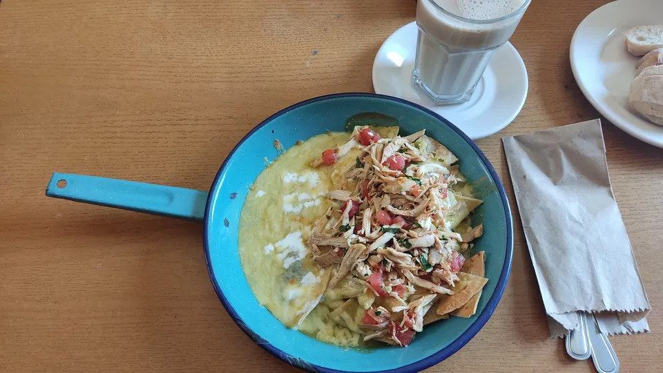
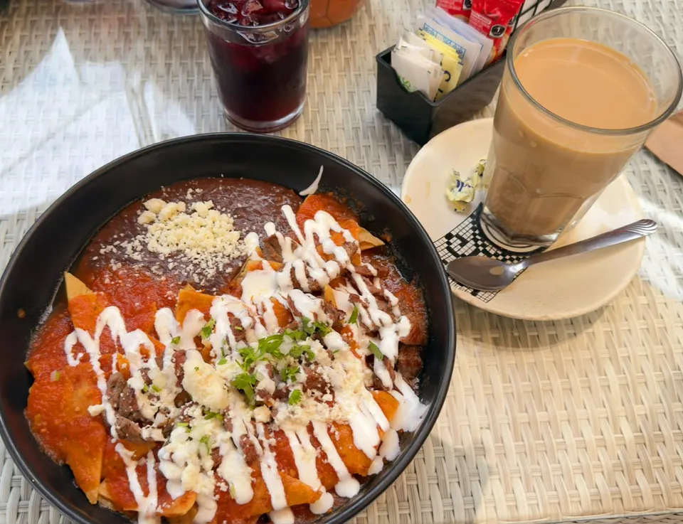
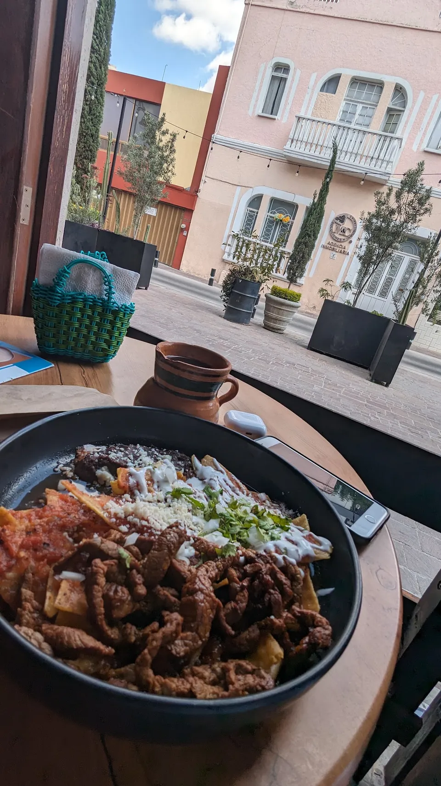
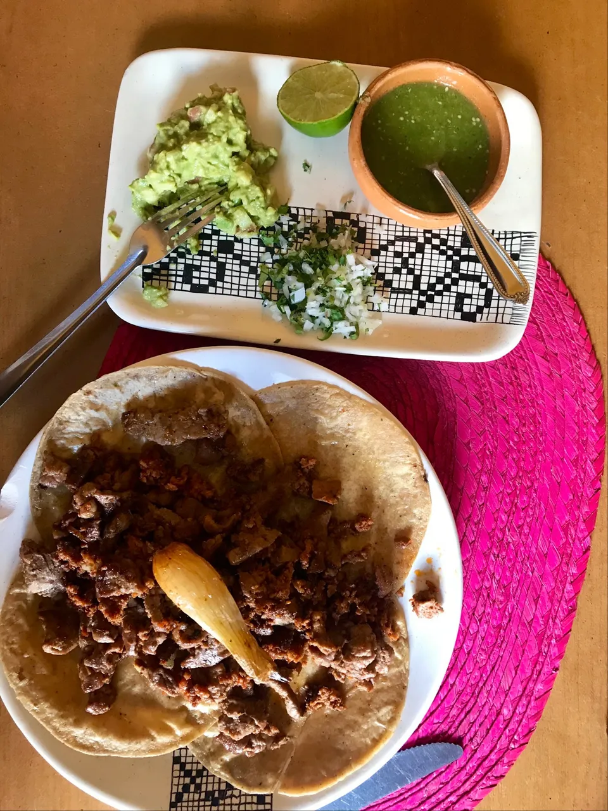
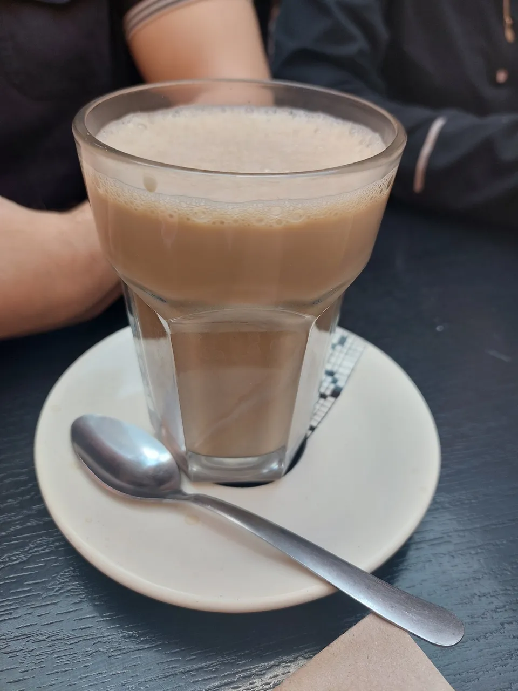
- ★★★★★
Los chilaquiles de pollo con salsa martajada son los mejores chilaquiles del Estado.
Victoria C · AguascalientesTripAdvisor
- ★★★★★
El pan está hecho ahí mismo y es una delicia. Recomiendo mucho el Rol de canela.
Are ArteGoogle
- ★★★★★
El Rol de canela está increíble y rico café de la Olla.
Rich Cousteau · IrapuatoTripAdvisor
- ★★★★★
De los chilaquiles más decentes que he probado en Ags. Súper buena porción.
Danyela NavarreteGoogle
- ★★★★★
El pan súper rico y está hecho en casa, los chilaquiles son perfectos y sus omelets otra delicia.
Ary · Ciudad de MéxicoTripAdvisor
- ★★★★★
Las porciones, ingredientes y presentación son buenas.
J Carlos TovarGoogle
- ★★★★★
El pan dulce suave, calientito, recién hecho.
Luis Arturo ETripAdvisor
- ★★★★★
Los chilaquiles son excelentes y muy abundantes.
Guillermo B · TolucaTripAdvisor
- ★★★★★
La crema de chicharrón, deliciosa.
Lucy H · TijuanaTripAdvisor
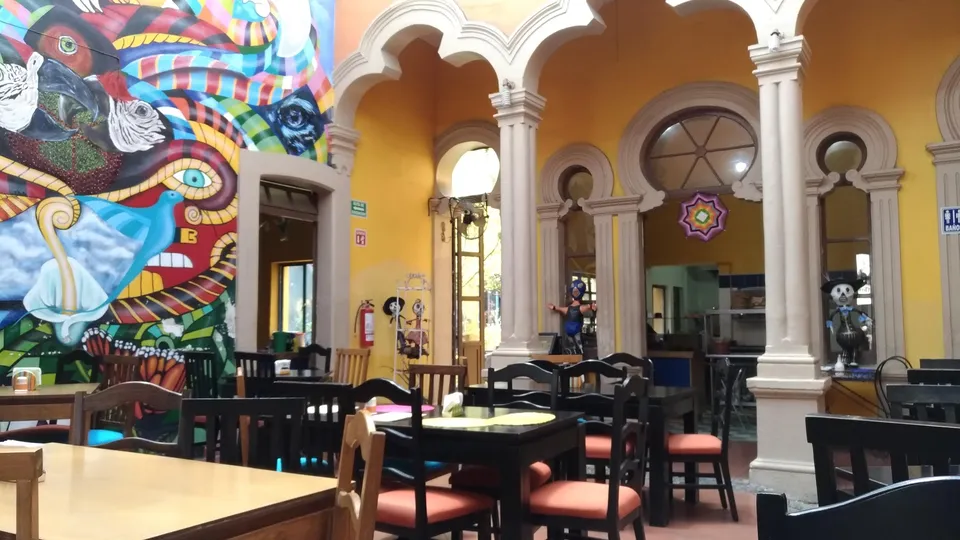
Arcos, muraly patio de sol.
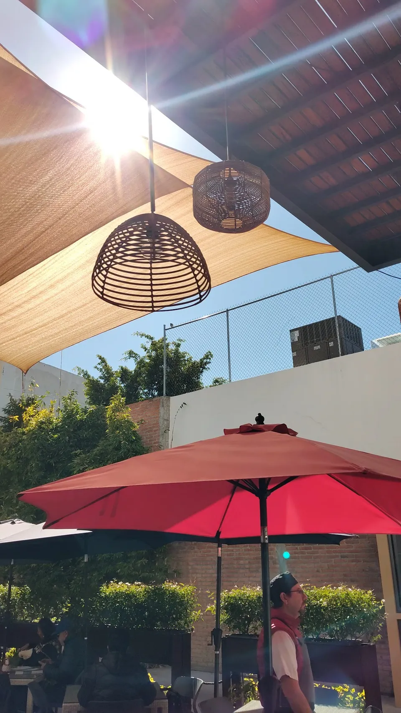
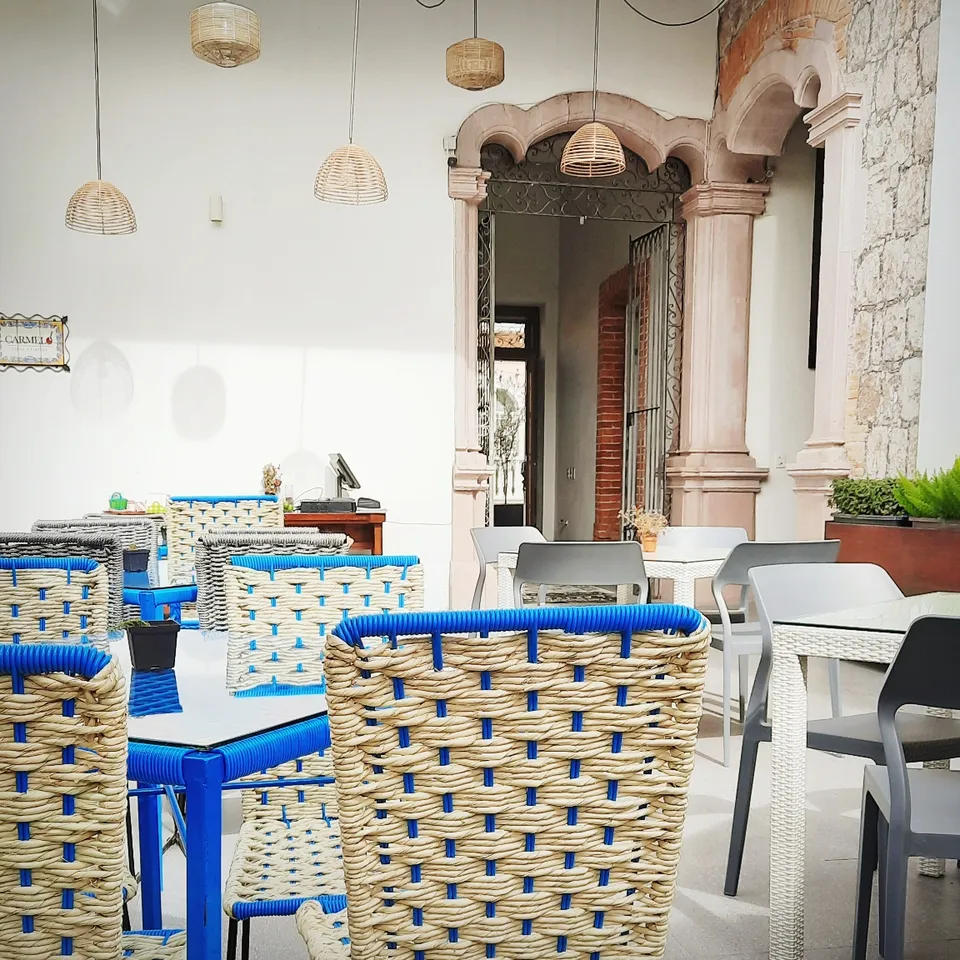
Recorrido
La mesa puesta,la casa abierta.
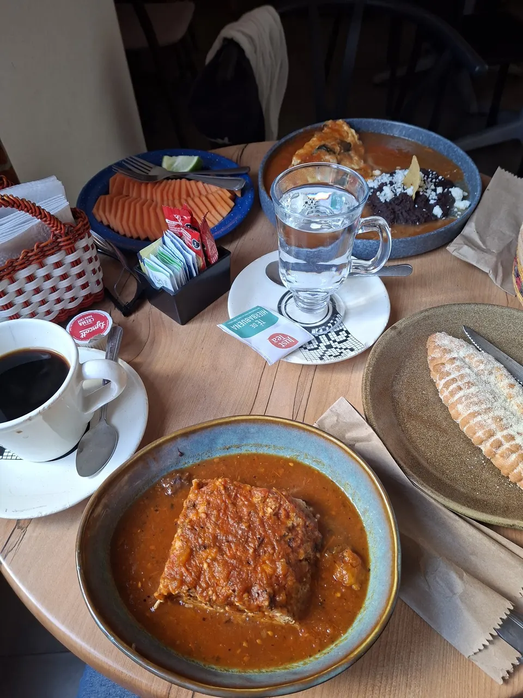
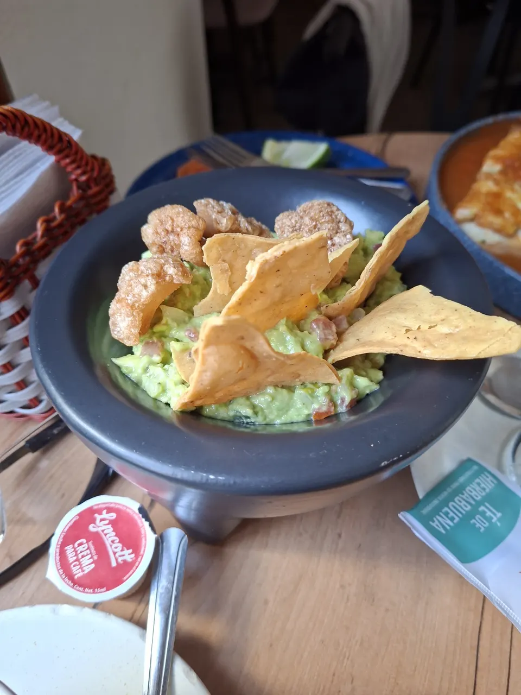
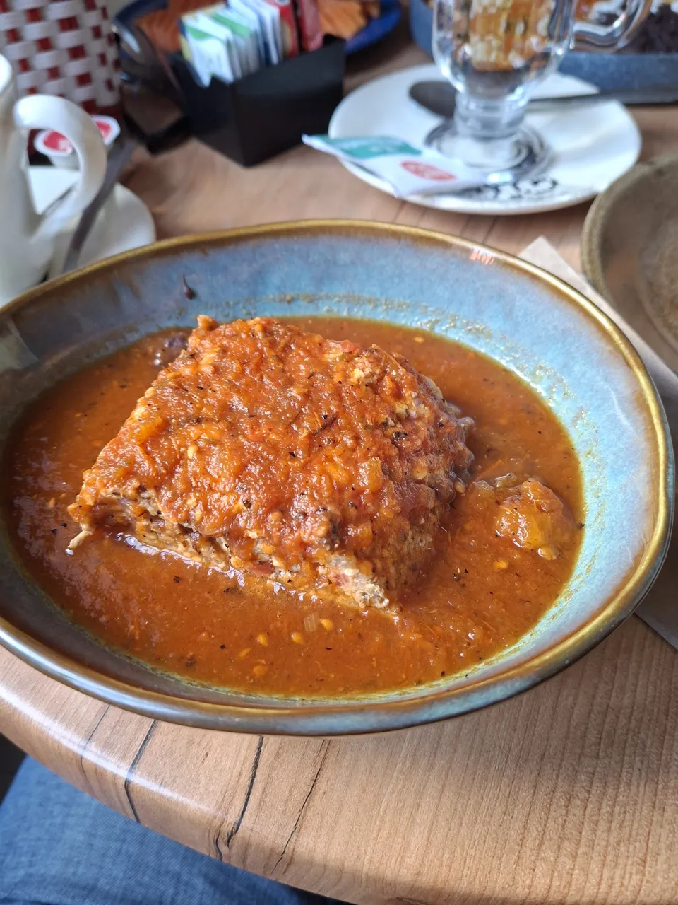
La carta
Cremas, filetesy pan de la casa.
Cremas y sopas
- Crema de chicharrón$130Crocante de queso, aguacate y un toque de chipotle.
- Crema de frijol$105Tiras de tortilla frita, aguacate y queso.
- Sopa azteca$130Con chicharrón duro, queso, crema, aguacate y chile pasilla.
- Consomé de pollo$85Del día, blanco o rojo.
Pescado
- Filete al gusto$160Empanizado, a la plancha, al ajillo, al mojo de ajo o a la diabla.
- Filete a la veracruzana$197En salsa de jitomate con pimientos, aceitunas y alcaparras.
- Filete empapelado María Sabina$220Gratinado con champiñones, cebolla y jitomate, al vino blanco.
- Fajitas de camarón$280Con pimientos, cebolla, tocino y champiñones. Guacamole y frijoles.
Precios de la carta en el local. En el desayuno: chilaquiles, rol de canela y pan hecho en casa. Pregunta el precio.
Pregunta qué hay hoyAntes de venir
Lo que todosnos preguntan.
¿Abren los martes?
No. El martes descansamos; los demás días abrimos a las 9:00.
¿A qué hora llego sin esperar?
El lugar es chico y se llena en el desayuno. Antes de las 10:00 es lo más tranquilo.
¿Cuánto se gasta por persona?
Entre $200 y $300 por persona.
¿Tienen para llevar o a domicilio?
Sí: en el lugar, para llevar, a domicilio y pedido en línea.
¿Qué es lo que más piden?
Chilaquiles, café de olla, enchiladas, cochinita y el rol de canela con el pan de la casa.
¿Dónde quedan?
Francisco Primo Verdad 119, Plaza Tres Arcos, en el centro, cerca del Templo de San Antonio.
Horario y lugar
Cerramos los martes.Los demás, ven.
Desayunos y comida desde las 9:00
- Lunes 9:00 a 13:30
- Martes Cerrado
- Miércoles 9:00 a 16:30
- Jueves 9:00 a 16:30
- Viernes 9:00 a 16:30
- Sábado 9:00 a 16:30
- Domingo 9:00 a 14:45
Francisco Primo Verdad 119Plaza Tres Arcos, Zona Centro, 20000 Aguascalientes. En el lugar, para llevar y a domicilio.
Todo listo para completar
- Confirmar el WhatsApp del restaurante
- Precios actuales de desayunos y carta completa
- Logo y letrero en grande
- Foto del rol de canela y del pan
Pásanoslo por el mismo chat donde te llegó esta muestra.